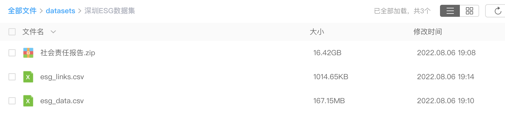
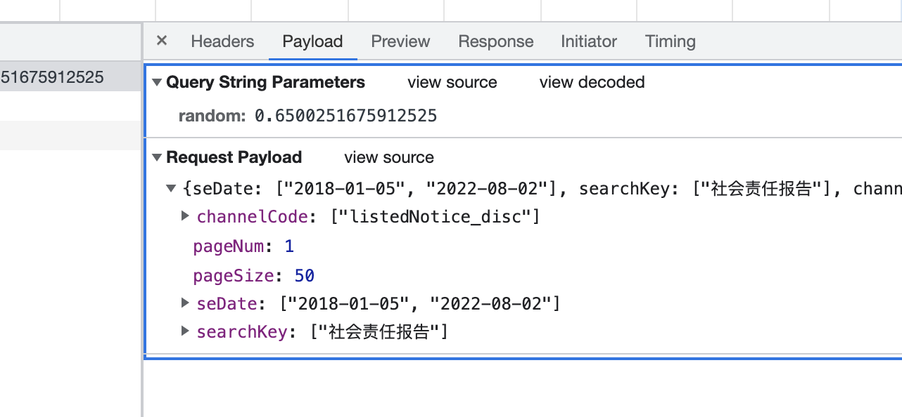
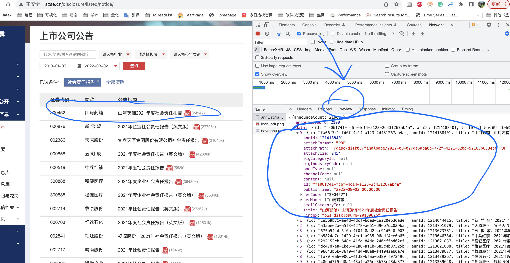
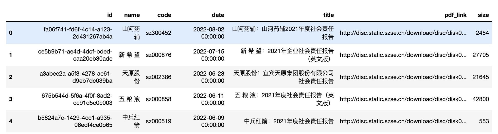
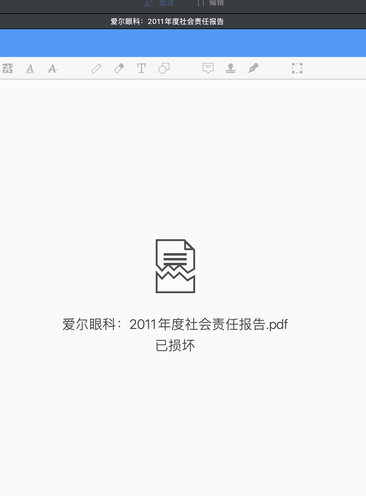
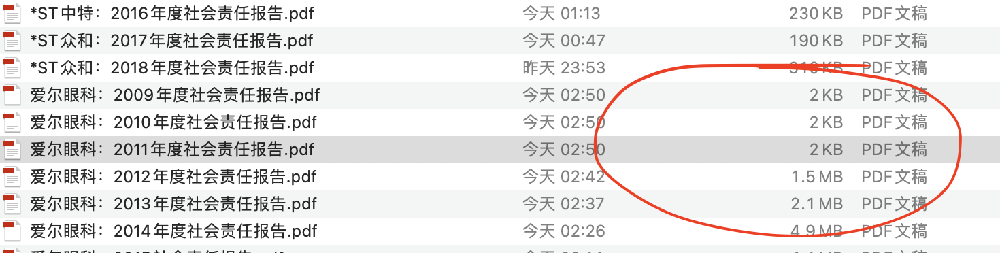

作者:张延丰 哈工程在读博士
近年来，企业社会责任（csr)已成为全球学术界研究的热点。国内外各大顶刊都先后刊登了多篇关于csr的文章，比如《企业绿色创新实践如何破解“和谐共生”难题？》（发表于管理世界）、《负责任的国际投资：ESG与中国OFDI》（发表于经济研究）、《Is my company really doing good? Factors influencing employees' evaluation of the authenticity of their company’s corporate social responsibility engagement》（发表于JBR）等。这些文章核心变量的构建大都基于对企业社会责任报告的内容分析和挖掘。比如《企业绿色创新实践如何破解“和谐共生”难题？》的被解释变量（绿色创新）以及部分解释变量（二元合法性和伦理型领导）。可见，社会责任报告对于我们研究esg至关重要。因此，接下来小编就带大家爬取深交所上市公司历年的社会责任报告，希望能够给大家带来一些帮助。
获取数据集
采集4000多个pdf文件。经过数据清洗，将20G的pdf数据，汇总整理到170M的csv文件内。

数据整理不易，如需获取本数据集，请转发本文至朋友圈集赞满30+， 加微信【372335839】，备注【深圳ESG数据集】

一、构建网络爬虫
数据采集分为多个步骤
- 找网址规律(GET or POST), 构造url参数
- 伪装请求，防止被封
- 构造csv，存储信心
- 执行整个爬虫
1.1 url
打开X交所的 http://www.szse.cn/disclosure/listed/notice/ ，同时打开浏览器开发者工具network面板，在截图左侧输入框输入关键词 『社会责任报告』，按下回车。
此时开发者工具network面板出现很多网络交换信息， 点击检查发现下图

发现该页面数据是POST请求，网址为
http://www.szse.cn/api/disc/announcement/annList?random=random参数
1.2 headers
同时也能发现伪装头参数，现将两个重要信息整理为
url = 'http://www.szse.cn/api/disc/announcement/annList?random={}'.format(random.random())
#伪装头
headers = {'Accept': 'application/json, text/javascript, */*; q=0.01',
'Accept-Encoding': 'gzip, deflate',
'Accept-Language': 'zh-CN,zh;q=0.9,en;q=0.8',
'Content-Type': 'application/json',
'Host': 'www.szse.cn',
'Origin': 'http://www.szse.cn',
'Proxy-Connection': 'close',
'Referer': 'http://www.szse.cn/disclosure/listed/fixed/index.html',
'User-Agent': 'Mozilla/5.0 (Windows NT 10.0; Win64; x64) AppleWebKit/537.36 (KHTML, like Gecko) Chrome/80.0.3987.132 Safari/537.36',
'X-Request-Type': 'ajax',
'X-Requested-With': 'XMLHttpRequest'}
1.3 data参数
POST请求需要构造data参数，在开发者对应于payload, 整理为Python格式

1.4 preview
看到左侧渲染后的数据，同时也能在开发者工具network面板看到肉眼背后的源数据。我们使用preview预览截图再次确认网址规律没有问题。

keyword = '社会责任报告'
page = 1
#post方法参数
payload ={"seDate": ["",""],
"searchKey": [keyword],
"channelCode": ["listedNotice_disc"],
"pageSize": 50,
"pageNum": page}
1.5 csv
现在已经把爬虫最重要的工作做完了，剩下的就是想办法构造出csv，并将数据存入csv。
#定义csv字段，存储PDF链接信息至data/esg_links.csv
csvf = open('data/esg_links.csv', 'a+', encoding='utf-8', newline='')
fieldnames = ['id', 'name', 'code', 'date', 'title', 'pdf_link', 'size']
writer = csv.DictWriter(csvf, fieldnames=fieldnames)
writer.writeheader()
test_data = {'pdf_link': '测试pdf文件链接',
'code': '测试股票代码',
'name': '股票名称',
'title': '报告名称',
'date': '发布日期',
'size': 'pdf文件字节大小',
'id': '数据id'}
writer.writerow(test_data)
#关闭csv
csvf.close()
二、爬虫代码(完整)
当你看到本文时，该完整代码很有可能会随着网站变化而失效。不要悲伤难过， 按照爬虫思路自己diy即可。如果没有爬虫基础，学习 大邓的B站爬虫视频 ，

自己懂爬虫原理diy代码，比改别人的代码来的更容易。将前面的准备工作组织起来, 就形成了下面的完整代码
import requests
import random
import json
import time
import csv
keyword = "社会责任报告"
#定义csv字段，存储PDF链接信息至data/esg_links.csv
csvf = open('data/esg_links.csv', 'a+', encoding='utf-8', newline='')
fieldnames = ['id', 'name', 'code', 'date', 'title', 'pdf_link', 'size']
writer = csv.DictWriter(csvf, fieldnames=fieldnames)
writer.writeheader()
#伪装头
headers = {'Accept': 'application/json, text/javascript, */*; q=0.01',
'Accept-Encoding': 'gzip, deflate',
'Accept-Language': 'zh-CN,zh;q=0.9,en;q=0.8',
'Content-Type': 'application/json',
'Host': 'www.szse.cn',
'Origin': 'http://www.szse.cn',
'Proxy-Connection': 'close',
'Referer': 'http://www.szse.cn/disclosure/listed/fixed/index.html',
'User-Agent': 'Mozilla/5.0 (Windows NT 10.0; Win64; x64) AppleWebKit/537.36 (KHTML, like Gecko) Chrome/80.0.3987.132 Safari/537.36',
'X-Request-Type': 'ajax',
'X-Requested-With': 'XMLHttpRequest'}
page = 1
#post方法参数
payload ={"seDate": ["",""],
"searchKey": [keyword],
"channelCode": ["listedNotice_disc"],
"pageSize": 50,
"pageNum": page}
#发起请求
url = 'http://www.szse.cn/api/disc/announcement/annList?random={}'.format(random.random())
resp = requests.post(url,
headers=headers,
data=json.dumps(payload))
#当data关键词有对应的非空列表，循环一直进行。
while resp.json()['data']:
payload['pageNum'] = page
resp = requests.post(url,
headers=headers,
data=json.dumps(payload))
esgs = resp.json()['data']
for esg in esgs:
#以字典样式写入csv
data = {'pdf_link': 'http://disc.static.szse.cn/download'+ esg['attachPath'],
#为防止股票代码被exel等软件识别为数字，特转为字符串，并加sz标识。
'code': 'sz'+str(esg['secCode'][0]),
'name': esg['secName'][0],
'title': esg['title'],
'date': esg['publishTime'],
'size': esg['attachSize'],
'id': esg['id']}
writer.writerow(data)
page = page + 1
#关闭csv
csvf.close()
三、查看csv
使用pandas读取 data/esg_links.csv,
import pandas as pd
df = pd.read_csv('esg_links.csv')
df.head()

len(df)
Run
4392
一共有4392条 「企业社会责任」 的报告数据。
四、批量下载
下载就简单多了， 直接使用定义好的爬虫代码。
import requests
def download(url, file):
"""
下载多媒体及文件
url： 多媒体文件链接（结尾有文件格式名）
file: 存储文件的路径（结尾有文件格式名）
"""
resp = requests.get(url)
#获取到二进制数据
binarydata = resp.content
#以二进制形式将数据流存入fname中
with open(file, 'wb') as f:
f.write(binarydata)
i = 0
for link, title in zip(df['pdf_link'], df['title']):
print(i, title)
download(url=link, file='data/{}.pdf'.format(title))
i = i + 1
Run
0 山河药辅：山河药辅2021年度社会责任报告
1 新 希 望：2021年企业社会责任报告（英文版）
2 天原股份：宜宾天原集团股份有限公司社会责任报告
3 五 粮 液：2021年度社会责任报告（英文版）
4 中兵红箭：2021年度社会责任报告
......
......
148 苏宁环球：2021年社会责任报告
149 蓝色光标：2021年度企业社会责任报告
150 开尔新材：2021年度社会责任报告
151 中顺洁柔：2021年社会责任报告
......
......
4391 闽东电力：2006年度社会责任报告
4392 阳光发展：2006年度社会责任报告书
采集过程中，被封锁在所难免，所以记得每次停止采集的位置，在csv中删除该位置之前的数据。然后重新运行代码即可。
注意
即时解决以上问题，可能遇到奇怪的问题。比如

检查发现相比其他几百kb的pdf，问题文件大小只有几kb。问题可能是被网站封锁或网络不稳定导致，标记好问题pdf的链接，重新批量下载一遍。

汇总至csv
很多企业社会责任报告是图片合成的，所以这里的pdf体积很大。将data文件夹中的4000多个pdf汇总至esg_data.csv中，能节约出电脑内存空间，也方便后续数据分析。
from pdfdocx import read_pdf
import os
import csv
i = 1
#新建esg_data.csv，用于存储企业社会责任报告数据
with open('esg_data.csv', 'a+', encoding='utf-8', newline='') as csvf:
fieldnames = ['id', 'name', 'code', 'date', 'title', 'pdf_link', 'size', 'report_content']
writer = csv.DictWriter(csvf, fieldnames=fieldnames)
writer.writeheader()
files = os.listdir('data')
for file in files:
record_of_df = df[df['title']==file.replace('.pdf', '')].iloc[0, :]
data = record_of_df.to_dict()
print(i, file)
data['report_content'] = read_pdf('data/{}'.format(file))
writer.writerow(data)
i = i + 1
最后，数据从20G的data文件夹(4000多个PDF)压缩为一个170M的esg_data.csv文件。
esg_reports_df = pd.read_csv('esg_data.csv')
esg_reports_df.head()

len(esg_reports_df)
Run
4346
五、相关文献
[1]解学梅, & 朱琪玮. (2021). 企业绿色创新实践如何破解 “和谐共生” 难题?. 管理世界, 37(1), 128-149.
[2]谢红军 & 吕雪.(2022).负责任的国际投资：ESG与中国OFDI. 经济研究(03),83-99.
[3]Schaefer, S. D., Terlutter, R., & Diehl, S. (2019). Is my company really doing good? Factors influencing employees' evaluation of the authenticity of their company's corporate social responsibility engagement. Journal of business research, 101, 128-143.